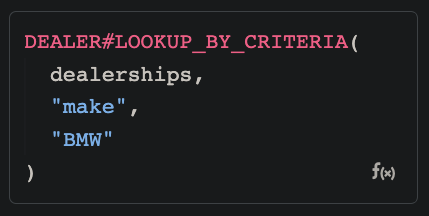

How many times have you been faced with the requirement to process a list of objects which contain a nested list of objects, and return only the objects of the main list where one or more objects in the nested list match a condition
Let’s start with a real-world use case
I have a list of Car Dealerships across the country, each dealership has several available vehicles for sale.
I need to return dealerships whose available cars match a given criteria which can be:
- Make (criteria: Ford, Honda, etc.)
- Category (criteria: SUV, Coupe, Sedan, etc.)
- Year (criteria: 2010, older than 2015, newer than 2005, etc.)
This is what that list looks like (dataType: List of JSON)
[
{
"dealershipName": "Pimps & Rides",
"dealershipLocation": "California",
"availableVehicles": [
{
"year": "2012",
"make": "Hyundai",
"model": "Veloster",
"category": "Coupe"
},
{
"year": "2019",
"make": "Ford",
"model": "Explorer",
"category": "SUV"
},
{
"year": "2015",
"make": "Honda",
"model": "HR-V",
"category": "SUV"
}
]
},
{
"dealershipName": "Los Carlos",
"dealershipLocation": "Texas",
"availableVehicles": [
{
"year": "2002",
"make": "Audi",
"model": "Q3",
"category": "SUV"
},
{
"year": "2007",
"make": "Hyundai",
"model": "Elantra",
"category": "Sedan"
},
{
"year": "2006",
"make": "Hyundai",
"model": "Sonata",
"category": "Sedan"
},
{
"year": "2012",
"make": "Cadillac",
"model": "CT5",
"category": "Sedan"
}
]
},
{
"dealershipName": "Papi Chulo",
"dealershipLocation": "Florida",
"availableVehicles": [
{
"year": "2003",
"make": "Honda",
"model": "Civic",
"category": "Hatchback, Sedan, Coupe"
},
{
"year": "2008",
"make": "Genesis",
"model": "G70",
"category": "Sedan"
}
]
},
{
"dealershipName": "High Roller",
"dealershipLocation": "New York",
"availableVehicles": [
{
"year": "2001",
"make": "BMW",
"model": "X3",
"category": "SUV"
},
{
"year": "2014",
"make": "Chevrolet",
"model": "Bolt EV",
"category": "Hatchback"
},
{
"year": "2008",
"make": "Ford",
"model": "Ranger SuperCrew",
"category": "Pickup"
}
]
}
]
Requirement
We need to iterate over the list of dealerships, and for each dealership iterate over the availableVehicles list to look for a key (this will be one of our UDF’s inputs, which will be variable, meaning we do not know which field the user will check), and check if the value matches the criteria provided.
If any of the dealership’s available vehicles match the criteria, return the whole dealership object.
Building the UDF
-
Inputs
-
json(dataType: List of JSON) - List of dealerships -
field(dataType: Text) - The JSON key to check -
criteria(dataType: Text) - The criteria to check the value against
-
-
Output
- datatype: List of JSON
-
UDF Body
FLAT( FROM dealer IN dealerships SELECT FROM car IN dealer.availableVehicles WHERE car[field] = citeria SELECT dealer )
Your UDF should look like
{kind=link}
Test runs
field = "make"criteria = "BMW"

{kind=link}
TIP: Play around with the inputs and logic to accommodate the use case where the “year” value is a Number instead of Text.